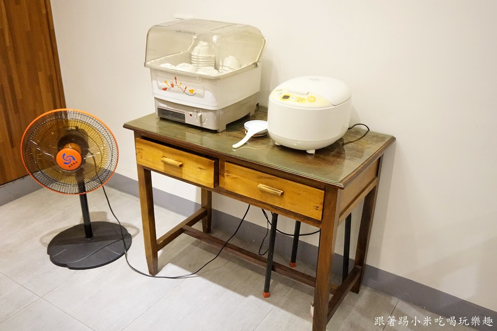
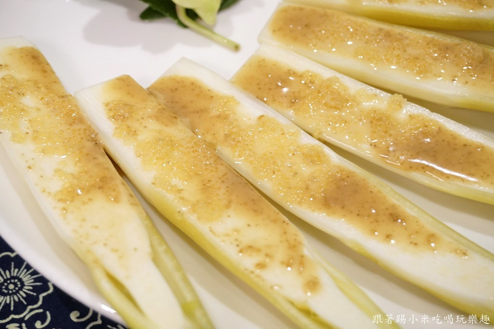

食在巷弄真的很巷弄, 在竹北三民路某一條巷子轉進去XD (請參考文末地圖), 幸好是他們對面有一個停車場, 停車上還算方便, 記得跟停車場伯伯說是食在巷弄用餐~
他們......就隱藏在私宅裡, 就讓小米打開那扇門大家一起走進去吧~(謎之聲:小米你是演那一套? )
進入餐廳, 真的就來到別人家一樣, 客廳放上兩張大圓桌就可以開飯~ 他們是採預約制, 每次預訂至少4人一桌, 最多可以到1X人, 每人價格500元起~XXXX元, 有興趣朋友打電話問老闆囉
他們的廚房就在這扇木門後面, 真的很像在別人家廚房端菜出來給來訪客人食用, 氣氛上很輕鬆也不用去煩惱想著要點什麼菜~
對了, 他們白飯是吃到飽, 吃得下讓你隨便裝
第一道是清燙中卷, 是冷盤呈現方式, 不沾醬吃也不怕有腥味, 而且口感上很彈牙新鮮, 當然加上蒜泥醬會更鹹香好吃
茭白筍, 應該也是清燙方式後再加上胡麻醬+明太子, 本身茭白筍很鮮甜, 加上胡麻醬香還不錯吃, 還有夾著明太子卡滋卡滋口感很特別
鮭魚生魚片, 厚切版本吃起來口感很滿足, 而且切魚片處理得還不錯, 不會吃到魚筋, 還有魚肉油花漂亮甘甜, 油脂也很豐富
白帶魚芋頭米粉湯, 這是他們鎖店之寶, 小米也是在網路上看到說這個是一定要跟店家要求吃這一道XD 食材有豆腐/炸酥/米粉/蚵仔/白鯧魚/芋頭
米粉是新竹有名產物之一, 他們米粉是爽Q滑溜, 吸了清甜湯頭超好吃, 而且泡久了也不會軟趴趴, 份量來說很大一鍋, 7個人一直吃都還有料, 小米就吃了好幾碗XDD
特別提一下他們的湯頭, 雖然加了這麼多料, 但湯頭其實不會油膩, 相對是清爽又清甜, 喝完也不會有口渴感
這個炸油酥泡軟軟的也不錯吃, 不會有臭油味~
白帶魚是先經過油炸再來泡湯~ 魚肉有外酥內軟口感, 而且是鹹香中帶魚肉甘甜
當然加上芋頭配米粉是小米所喜歡, 我太愛吃芋頭了~
干貝是不是很大顆呢? 科科, 小米等人這次想吃好料食材, 所以才拉到800元預算XD 干貝感覺是先煎後蒸處理手法, 是外酥內軟口感, 口味上也有鮮甜, 加上紅紅蕃茄肉酸V有引出干貝鮮味
豬肋排是先去骨再切塊, 食用上很方便, 肥瘦比例剛剛好, 吃起來很軟嫩, 因為有加了一些香料來烤肋排, 所以單吃就鹹香有味, 也吃得到豬肉原始甜味呢
重口味朋友可以再沾黃芥末來吃~
紅點石斑魚, 是比較高級石斑魚 清蒸方式是最適合的, 白昕魚肉很甜美, 魚刺也不多, 可以大口大口吃魚肉很過癮 小米的建議吃法是原味吃一輪後, 再加蔥加點醬油一起吃, 會多了醬油甘甜及蔥香也不錯唷~
清蒸沙公沙母大螃蟹~ 進入秋冬螃蟹正肥, 看到大紅蟹殼小米口水就直流了......
蟹螫很大一支, 而且是蟹肉新鮮甜美, 用清蒸方式也是最棒的~~~

蟹黃是濕潤的甜美, 不會乾乾的超好吃! 其他蟹肉份量也讓人很滿足, 這就是沙公沙母的特色
吻仔魚+蛋+炒青菜, 蔬菜本身就很新鮮了, 加吻仔魚淡淡鮮味其實還不錯吃, 不過小米比較獨愛金銀蛋來炒就是了.哈哈哈~~~
飯後甜點是水果~

大家吃飽喝足後, 老闆還跟我們聊一下美食文化, 這種吃飽聊天也是一種另類愜意生活, 不會說吃飽就閃人, 大家還可以聊一下來聯絡感情感覺很棒 但小米沒想到老闆原來以前是從事設計工作的耶, 有品味的人來轉型當廚師還蠻特別:p
引自:http://timmyvong.pixnet.net/blog/post/440488708